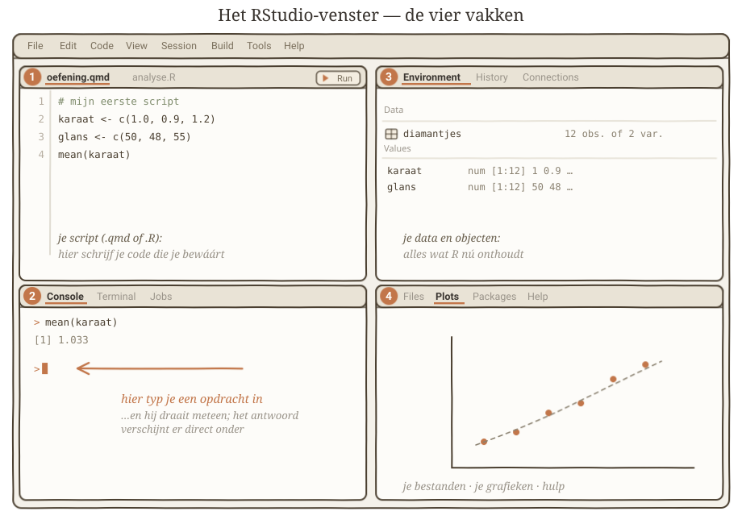

Eerste beweging · Verschil onder de loep
Oefening 0.0 · Installeren & instellen
R en RStudio klaarzetten · setup
Misschien heb je nog nooit iets voor statistiek geïnstalleerd. Misschien heb je überhaupt nog nooit een programma geïnstalleerd dat niet uit een app store kwam, en klinkt het woord “console” als iets uit een cockpit. Prima. Sterker nog: dan is deze pagina precies voor jou geschreven. We doen het samen, stap voor stap, en er kan onderweg niks kapot. Het is een keer of tien klikken, één keer doen, en daarna nooit meer.
Eén ding vooraf, zodat de rest logisch wordt: je gaat twee dingen installeren, en dat is geen vergissing. R is de motor — het programma dat straks al het echte rekenwerk doet. RStudio is het dashboard eromheen — een net venster met knoppen en overzicht, waarin je die motor prettig kunt bedienen. De motor kán zonder dashboard (dat ga je zo even zíén, het is leerzaam), maar niemand wil dat elke dag. Dus: eerst de motor, dan het dashboard.
Stap 1 — installeer R (de motor)
- Ga naar cran.r-project.org. Dat is CRAN, de officiële thuisbasis van R. Gratis, geen account nodig, geen addertjes.
- Bovenaan staan drie linkjes: Download R for… — kies wat jij hebt.
- Mac: klik Download R for macOS en pak het
.pkg-bestand dat bij jouw Mac past (de pagina zegt welke voor nieuwere en welke voor oudere Macs is — bij twijfel: Macs van na 2020 zijn meestal “Apple silicon”). - Windows: klik Download R for Windows, dan base, dan de grote download-link bovenaan.
- Mac: klik Download R for macOS en pak het
- Open het gedownloade bestand en klik je door de installatie heen. Alle standaard-instellingen zijn goed; je hoeft nergens iets aan te passen. Volgende, volgende, voltooien — echt waar.
Dat was de motor. Hij staat nu ergens op je computer te wachten. Je hoeft hem niet te zoeken; het dashboard vindt hem straks vanzelf.
Stap 2 — installeer RStudio (het dashboard)
- Ga naar posit.co/download/rstudio-desktop. (Posit is het bedrijf achter RStudio — zelfde programma, nieuwe bedrijfsnaam, laat je niet in de war brengen.)
- Pak de gratis RStudio Desktop-versie. De pagina herkent meestal zelf of je Mac of Windows hebt en zet de juiste knop klaar.
- Ook hier: openen, doorklikken, klaar. Op een Mac sleep je RStudio nog even naar je Applications-map als daarom gevraagd wordt.
Twee installaties, nul moeilijke keuzes. Het zware werk zit erop.
Een klein uitstapje: open de motor eens zónder dashboard
Voor je RStudio opent, wil ik je één ding laten zien — het duurt dertig seconden en je snapt daarna voorgoed waaróm die twee programma’s bestaan.
Open eens R zelf (niet RStudio): zoek in je programma’s naar “R” met dat grote blauwe R-logo, en start het. Wat je krijgt is… niet veel. Een kaal venster met wat opstarttekst, en onderaan één eenzaam teken:
>Geen knoppen. Geen menu’s die je verder helpen. Geen overzicht van je data. Alleen dat >-teken, dat geduldig wacht tot jij iets typt. Dít is de console: de plek waar je een opdracht intikt, op ↵ drukt, en R meteen antwoord geeft. Typ voor de aardigheid eens 1 + 1 en druk op ↵ — kijk, hij rekent. Dit is de motor, helemaal bloot.
Zo werkte statistiek vroeger: alles blind typen in zo’n kaal venster, alles zelf onthouden, nergens houvast. Het kán — maar het is alsof je een auto bestuurt door briefjes in de motorkap te gooien. Sluit dat kale venster maar weer (als hij vraagt of je de workspace wilt bewaren: nee hoor). Vanaf nu open je altijd RStudio — dat pakt precies diezelfde motor netjes in, met alles in beeld.
Open RStudio: vier vakken, één overzicht
Start RStudio. Je krijgt een venster dat er ongeveer zo uitziet:

Vier vakken. Dat lijkt veel, maar elk vak heeft één simpele taak:
- Linksonder — de Console. Hier woont dat
>-teken van net, hetzelfde als in het kale venster, maar nu met vriendelijke buren. Dit is de plek waar je een opdracht typt en hij meteen draait: tik iets achter de>, druk op ↵, en het antwoord verschijnt eronder. In de oefeningen staat steeds precies wat je hier kunt intikken. - Linksboven — de Source (je script). Een kladblok voor opdrachten die je wilt bewaren. Wat je in de console typt is vluchtig; wat je hier in een
.R-bestand zet, kun je morgen opnieuw draaien. (Zie je dit vak nog niet? Het verschijnt zodra je een nieuw script opent: File → New File → R Script.) - Rechtsboven — de Environment. Hier zie je wat R op dit moment in handen heeft: zodra je straks een dataset inleest, verschijnt hij hier, met naam en aantal rijen. Je data-plank.
- Rechtsonder — Files, Plots, Help. Een verzamelvak: je bestanden, de grafieken die je maakt, en de ingebouwde hulp-pagina’s. Maak je straks je eerste plaatje, dan floept het hiér tevoorschijn.
Meer hoef je nu niet te onthouden. In de praktijk kijk je de eerste weken vooral naar één vak: de console, linksonder, met die >. De rest komt vanzelf in beeld op het moment dat je hem nodig hebt.
Eén handigheidje voor straks
De oefeningen werken met databestanden (CSV’s) die je downloadt. R moet dan weten in wélke map dat bestand ligt. Dat wijs je aan via het menu: Session → Set Working Directory → Choose Directory… — kies de map waar je databestand staat, en R vindt het voortaan gewoon op naam. Vergeet je het, dan klaagt R vriendelijk dat hij het bestand niet kan vinden; dan weet je meteen waar je moet kijken. Meer instellen hoeft er nu niet.
Stap 3 — installeer de tidyverse (het gereedschapskistje)
R kan uit de doos alles wat je in dit oefenboek nodig hebt. Toch doen we elke handeling twee keer: één keer in base R — R zoals hij geleverd wordt — en één keer met dplyr, een pakket dat hetzelfde doet met werkwoorden en een pijpje. Je vindt ze in elke oefening naast elkaar, in twee tabbladen.
Waarom allebei? Omdat je ze allebei tegenkomt. Base R staat in oudere handleidingen en op tentamens; dplyr is wat je in modern onderzoekswerk overal ziet. Wie alleen de ene kent, valt stil bij de code van iemand anders.
Dat installeer je één keer:
install.packages("tidyverse")Dit is geen kleine download. De tidyverse is een familie van pakketten (dplyr voor bewerken, ggplot2 voor plaatjes, tidyr voor omvormen, readr voor inlezen) en de eerste installatie duurt op een gewone laptop een paar minuten. Zit je met een groep op één wifi-netwerk en begint iedereen tegelijk, dan ben je een half uur kwijt aan wachten in plaats van aan statistiek.
Dus: installeer thuis, en controleer dat het werkt met deze twee regels:
library(dplyr)
mtcars |> count(cyl)Zie je een tabelletje met drie regels — 4 cilinders 11 keer, 6 cilinders 7 keer, 8 cilinders 14 keer — dan staat het goed. (mtcars is een dataset die altijd in R zit, dus je hebt er niets voor hoeven downloaden.) Zie je there is no package called 'dplyr', dan is de installatie niet gelukt — probeer install.packages("tidyverse") nog eens en let op de laatste regels die R uitspuugt.
En let op één ding dat iedereen één keer overkomt: installeren doe je één keer, aanzetten elke keer opnieuw. Start je RStudio op een nieuwe dag, dan is dplyr er wel maar staat hij uit; library(dplyr) bovenaan je script zet hem aan. Vergeet je dat, dan klaagt R dat hij filter niet kent — en dan weet je meteen wat eraan scheelt.
Soms nog een pakket
Een enkele oefening leunt op iets specifieks dat niet in de tidyverse zit — bijvoorbeeld psych (bij Oefening 7.1) of effectsize (bij Oefening 9.2). Zelfde knopje, andere naam:
install.packages("psych")Elk blok zegt netjes wélk pakket het nodig heeft, dus je hoeft nu niets vooruit te installeren — alleen te weten waar het knopje zit als een oefening erom vraagt.
Later pas nodig — PROCESS van Hayes
Bij mediatie en moderatie laat dit boek aan het eind zien hoe je dezelfde analyse met PROCESS draait, de macro van Andrew F. Hayes. Dat is een extra: je rekent het eerst met de hand uit.
PROCESS voor R is geen pakket maar één bestand dat je inleest. Het draait op kale R en heeft geen andere pakketten nodig.
- Haal het zip-bestand op bij processmacro.org → Download (gratis; versie 5.0, juni 2025).
- Zet
process.Rin dezelfde map als je script. - Elke sessie één keer inlezen:
source("process.R")Daarna bestaat de functie process() en kun je hem gebruiken zoals in de oefeningen over mediatie en moderatie staat.
En nu: echte data
Dat was het. R staat erop, RStudio staat erop, je weet waar de console zit en wat dat >-teken van je wil. Je bent — zonder overdrijven — klaar om statistiek te gaan dóén.
Nu R en RStudio staan, gaan we in Oefening 0.1 gewoon eens naar echte data kijken: een bestand openen, erdoorheen scrollen, en zien wat daar eigenlijk ligt. Geen formules nog. Eerst kijken.
Herschreven 2-8 (Fable) tot beginner-onboarding met de motor/dashboard-boog: eerst R kaal openen (console voelen), dán RStudio als inpakking; vier vakken uitgelegd aan de hand van _figuren/rstudio_panes.svg. Echte links behouden (CRAN + Posit). Pakket-installatie 8-8 teruggezet als Stap 3, nu de oefeningen base R en dplyr naast elkaar zetten: tidyverse hoort dus tot de basis-installatie, niet tot de losse extra’s. Waarschuwing over de installatietijd erbij op Bens signaal over de PUM-week (zes mensen tegelijk op één wifi = een half uur kwijt), plus een controleregel op starwars zodat je thuis kunt zien of het werkt. TODO: echte RStudio-screenshot vervangt de schets in de screenshot-ronde; stem-pas Ben.